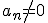

Función polinómica
Definición
Toda función de la forma , siendo n un número natural y , números reales, es una
función polinómica.
Si  , entonces la función es de grado n.
, reciben el nombre de coeficientes. El que acompaña a la variable de mayor exponente, se denomina coeficiente principal.